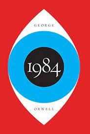

Both 1984 and Brave New World offer perspectives on society crumbling Dystopias
Although they come from varying perspectives and styles both have offered insight
and warnings of possible issues to come that become exploited when on mass allows
for manufacture of a corrupt soiety
Fun fact: Utopia comes from the same greek origin translating directly into Dystopia


1984-George Orwell | Brave New World-Aldous Huxley
Document
Similarties and Differences
Similarities
- Dystopian Futures
- Heavy Governemnt Secrets and Coverups
- Mass perception alterations though laws and incentives
Differences
- Different means of control
- Different reasons for arriving on the "Banned Books" list
- Written by different men at different times
Resources
Brave New World Wiki
Brave New World
1984 Wiki
1984